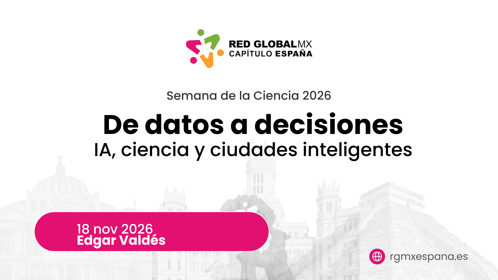

Hadox Talks · Semana de la Ciencia 2026
De datos a decisiones: IA, ciencia y ciudades inteligentes
Edgar Valdés · Hadox Research Labs / Nodo Guanajuato
Discurso de 15 minutos, preparado para la Semana de la Ciencia de Red Global MX Capítulo España, 18 de noviembre de 2026.

Lámina 01
Ciencia urbana: interacciones, escala e indicadores
Buenas tardes. Soy Edgar Valdés, de Hadox Research Labs y Nodo Guanajuato. Esta charla se llama De datos a decisiones. Quiero empezar con una pregunta de ciencia urbana: ¿cómo sabemos qué parte de un resultado corresponde al tamaño de una ciudad y qué parte merece una explicación particular?
Las ciudades reúnen personas, infraestructura, actividades e instituciones que se relacionan. La localización de un servicio modifica recorridos; esos recorridos cambian oportunidades de encuentro y acceso. Una intervención produce respuestas que pueden extenderse por la red. Por eso observamos interacciones, diversidad y retroalimentación.
La ciencia urbana busca describir esas relaciones, formular mecanismos y contrastarlos con mediciones. Un mapa permite localizar; un modelo nos permite preguntar qué patrón esperaríamos y qué observaciones se apartan de él.
Una de esas referencias es el escalamiento urbano. Relacionamos un indicador Y con una población N mediante un exponente beta. Estimamos ese exponente y examinamos si la relación describe razonablemente los datos.
En urban-sami trabajamos esta idea con población y establecimientos del DENUE en México. La gráfica es del estudio: cada punto representa un municipio. Para dos mil cuatrocientos sesenta y nueve municipios con población y establecimientos positivos, el ajuste mostrado tiene beta de cero coma noventa y cinco y R cuadrada ajustada de cero coma ochocientos cuarenta y seis.
Es un resultado para esa variable, ese conjunto de datos y ese soporte territorial. El municipio aproxima la unidad de ciudad; en algunos lugares incluye áreas rurales extensas. Esa diferencia también se estudia. No trasladamos automáticamente el mismo ajuste a barrios, AGEB o manzanas.
La siguiente pregunta es cuánto se aparta cada observación de lo esperado por su tamaño. El SAMI expresa esa desviación como el logaritmo de la razón entre el valor observado y la referencia ajustada.
Cero significa coincidir con la referencia; un valor positivo indica estar por encima y uno negativo, por debajo. Eso puede alimentar indicadores de seguimiento urbano, con una comparación explícita que podemos discutir.
Su sentido depende de lo que medimos. Más establecimientos y más siniestros plantean interpretaciones distintas. El residual tampoco identifica por sí solo una causa: abre una pregunta sobre especialización económica, medición, historia o mecanismos que el modelo todavía no representa.
La ciencia urbana incluye otras familias de modelos. El modelo de radiación de Simini y colaboradores estudia movilidad mediante oportunidades y población. El modelo de Schelling examina cómo las decisiones locales pueden producir patrones colectivos de segregación. SLEUTH utiliza autómatas celulares para simular crecimiento urbano y cambio de uso del suelo.
Son modelos publicados, con preguntas y supuestos diferentes. En nuestro recorrido necesitamos elegir el método que corresponde a la pregunta y comprobarlo. La inteligencia artificial puede ayudarnos a explorar, estimar y operar estos métodos. Para entender esa contribución, recuperemos sus distintos mundos.
Fuentes y alcance
- Bettencourt, Lobo, Strumsky y West (2010). Urban Scaling and Its Deviations. PLOS ONE.
- urban-sami: estudio de Hadox Research Labs / Polisplexity, 2026. Muestra de 2.469 municipios con población y establecimientos positivos, DENUE e INEGI. β = 0,950; R² ajustado = 0,846. Estudio en desarrollo, sin revisión por pares. El municipio es la unidad empírica y puede incluir territorio rural.
- Simini et al. (2012). A universal model for mobility and migration patterns.
- Schelling (1971). Dynamic Models of Segregation.
- Clarke, Hoppen y Gaydos (1997). A Self-Modifying Cellular Automaton Model of Historical Urbanization in the San Francisco Bay Area.
Lámina 02
Los mundos de la IA y la anatomía de un agente
Este mapa presenta cuatro mundos de la inteligencia artificial: inspiración natural, machine learning, redes neuronales y sistemas multiagente. Es una organización pedagógica. Las familias pueden combinarse; nos ayuda a reconocer qué capacidad aporta cada una.
La inspiración natural reúne métodos para explorar y optimizar alternativas. Los algoritmos genéticos combinan y modifican soluciones; la evolución diferencial también explora una población de candidatos. En los enjambres aparecen PSO y las colonias de hormigas. Otras metaheurísticas incluyen WDO y el recocido simulado. La pregunta común es cómo recorrer un espacio de soluciones bajo una función objetivo y restricciones.
Machine learning aprende regularidades a partir de datos o experiencia. En supervisado tenemos ejemplos con respuestas conocidas; aparecen SVM o kNN. En no supervisado buscamos estructura, con métodos como PCA o k-means. Por refuerzo, un agente actúa en un entorno y aprende de una recompensa; Q-learning es un ejemplo.
Las redes neuronales aprenden representaciones. El mapa recorre feed-forward y aprendizaje profundo, con CNN, RNN, LSTM y Transformers. Las redes generativas incluyen GAN, difusión y modelos de lenguaje. Esas capacidades permiten reconocer, representar y generar información.
Los sistemas multiagente estudian coordinación: cooperar, negociar y repartir tareas. Aquí aparecen juegos cooperativos, negociación automatizada y agentes de IA. Una meta compartida exige definir qué hace cada participante y cómo se relaciona con los demás.
Ahora ampliemos un agente construido con un modelo de lenguaje. Hay un modelo y un arnés: el software que sostiene la ejecución de una tarea.
Llega un encargo. El arnés prepara el contexto: instrucciones, entrada y estado del trabajo. Puede recuperar información relevante y presentar al modelo las operaciones disponibles. El modelo produce una salida que el despachador interpreta.
Esa salida puede ser una respuesta final o una petición de herramienta, con un nombre y argumentos. En el segundo caso, el ejecutor hace la llamada. La herramienta realiza la operación y devuelve un resultado o un error. El arnés lo incorpora al contexto y comienza otra vuelta. Así, lo observado cambia el siguiente paso.
Por ejemplo: necesitamos revisar los equipamientos registrados en un sector. El agente primero obtiene el contexto de ciudad y las capas disponibles; después consulta los campos, prepara el filtro, ejecuta la selección y revisa qué obtuvo. Si necesitamos un archivo completo, puede iniciar una exportación y recuperar su artefacto.
Cada operación deja una relación entre la petición, los argumentos y el resultado. Los permisos delimitan qué puede hacerse; los límites evitan ciclos sin control; las trazas permiten reconstruir el trabajo. MCP o una API ofrecen interfaces para esas operaciones.
Según la tarea añadimos memoria persistente, recuperación de información, skills o varios agentes especializados. Esas piezas modifican el contexto y la coordinación del sistema.
El mapa superior explica de dónde vienen las capacidades; la ampliación muestra cómo las convertimos en una secuencia de trabajo. El criterio científico sigue en la pregunta, el método y la revisión. Para estudiar una intervención urbana necesitamos, además, un objeto sobre el que trabajar: aquí entran los gemelos digitales.
Fuentes y alcance
- Mapa pedagógico de los mundos de la IA: presentación de Edgar Valdés, iGISc 2026, Toluca. El mapa original atribuye su base a Antonopoulos et al. (2020), con actualización de Edgar Valdés. Las familias se superponen.
- Model Context Protocol: conceptos de servidor, herramientas y recursos.
- Urban MCP: herramientas, preparación de casos y capacidades urbanas.
Lámina 03
Gemelos digitales: de la pieza al territorio
La evolución industrial nos da una entrada muy clara a los gemelos digitales. Podemos trabajar con un diseño virtual, ensayar una puesta en marcha y conectar información durante la operación. El alcance cambia con el objeto, la pregunta y el momento de su ciclo de vida.
Estas cinco familias se pueden combinar. No son una escalera en la que toda organización tenga que pasar por las mismas etapas.
En un producto o componente preguntamos si una pieza resiste y funciona. El diseño CAD, el análisis de elementos finitos o la dinámica de fluidos permiten estudiar determinadas condiciones antes de fabricar o modificar.
En un activo en operación, como una bomba, nos interesa su condición. Sensores y series temporales permiten relacionar el comportamiento observado con un modelo de ese equipo.
En una línea o planta necesitamos estudiar cómo arrancará y producirá el conjunto. La simulación y la puesta en marcha virtual ayudan a ensayar secuencias y controles.
En una red o sistema, como el abastecimiento de agua, importan las conexiones. Un cambio puede propagarse por la red; necesitamos grafos y modelos físicos que representen las relaciones pertinentes.
En territorio y ciudad aparece una combinación todavía más amplia: edificios, redes, actividades, instituciones y personas. La pregunta es qué cambia una intervención, para quién y bajo qué condiciones. Allí se encuentran información geográfica, BIM, bases espaciales y modelos sectoriales.
Podemos reconocer funciones análogas en las piezas que desarrollamos.
OLDT sostiene el registro territorial, sus relaciones y las consultas sobre un estado de la información. En el símil industrial, necesitamos saber de qué objeto hablamos y qué sabemos de él antes de operar un modelo.
Urban MCP ofrece acceso a herramientas y motores. Según el caso, una pregunta requiere operaciones geográficas, una red de movilidad o un modelo hidráulico. El método sigue perteneciendo a ese motor y exige sus datos y condiciones.
Urban GPU Lab permite experimentar con cómputo e inferencia local. En nuestra prueba reciente, el modelo de lenguaje corrió en GPU y el cálculo geográfico en CPU. Cada carga necesita su propia evaluación.
Quetzia aporta exploración y propuestas espaciales. Podemos ubicar un elemento, observarlo en una escena y discutir una intervención. La representación se vuelve un soporte para formular y revisar alternativas.
El símil nos ayuda a separar funciones: registro, herramientas de análisis, capacidad de cómputo e interacción. La integración concreta se verifica para cada tarea.
Un gemelo útil vincula el objeto, su estado y un modelo que responde a una pregunta. Llevar estas capacidades a una ciudad exige también acuerdos sobre datos, responsabilidades y continuidad. Ese aprendizaje explica el recorrido de OLDT entre Europa, México y Latinoamérica.
Fuentes y alcance
- Gemelos digitales: tipos y tecnologías. Presentación iGISc 2026 de Edgar Valdés.
- Open Local Digital Twin: repositorio abierto.
- Urban MCP: capacidades y casos reproducibles.
- Urban GPU Lab: experimento de laboratorio, noviembre de 2026. Inferencia de lenguaje en GPU y cálculo geográfico en CPU; evaluación por carga de trabajo.
- Quetzia: exploración y propuestas espaciales.
- La analogía separa funciones. La integración y validación se comprueban para cada caso.
Lámina 04
OLDT: maduración, transferencia y siguiente etapa
El recorrido de OLDT puede leerse como un proceso de maduración. Empezamos con un núcleo territorial abierto: registrar información, conservar su procedencia, relacionarla y consultar qué sabemos de un lugar.
El desafío fue ampliándose cuando ese núcleo tuvo que dialogar con otros sistemas y con las responsabilidades de quienes utilizan la información.
En el trabajo alrededor de LDT4SSC preparamos una propuesta con Tallinn y Gaziantep y desarrollamos compatibilidad con aplicaciones del EU Local Digital Twin Toolbox. La pregunta técnica pasó a ser cómo intercambiar información, utilizar una capacidad externa y recuperar el resultado conservando identidad y procedencia.
Ese trabajo produjo pruebas acotadas de interoperabilidad. La diferencia entre una herramienta que abre, una operación que cruza dos sistemas y un servicio aceptado por una ciudad fue parte del aprendizaje.
El punto era poder reconstruir qué salió del registro territorial, qué operación se realizó y qué resultado volvió. Las conversaciones posteriores en Tallinn y Helsinki ayudaron a relacionar esas capacidades con preguntas de planeación y análisis.
En México, el trabajo sobre SITU y la propuesta OTKN desplazaron el énfasis hacia el conocimiento territorial. Un archivo necesita fecha, significado, condiciones de uso y una responsabilidad de actualización.
Desarrollamos una arquitectura de alineación y un microdemo para Guerrero con datos públicos. La revisión técnica, la revisión especialista y la autoridad institucional atienden responsabilidades diferentes. Ese recorrido importa para que otra persona pueda reutilizar un resultado y comprender de dónde viene.
En las conversaciones con Bogotá y Medellín encontramos equipos, sistemas y capacidades geoespaciales existentes. La propuesta se orientó a aprovechar esa base: conectar consultas, agentes y escenarios con preguntas locales.
Los demostradores con datos de Medellín permitieron ensayar una revisión territorial y una selección de candidatos solares. Son ejercicios que ayudan a precisar el siguiente trabajo con la ciudad; su aceptación y validez operativa requieren una evaluación propia.
¿Hacia dónde vamos? A validar un caso con una ciudad y un equipo responsable. Primero acordar qué decisión queremos apoyar. Después identificar datos, una referencia y un método. Construir escenarios comparables y medir los resultados. Finalmente revisar si la evidencia sostiene la interpretación y qué debemos corregir.
Aquí volvemos al comienzo: los indicadores y los modelos de ciencia urbana permiten hacer preguntas concretas sobre lo que cambia. Los agentes pueden coordinar el trabajo y los gemelos conservar la relación con el territorio.
La madurez se comprueba al medir, contrastar y corregir. El siguiente paso es convertir estas capacidades en un caso que pueda continuar: con responsables, criterios de comparación y seguimiento. Esa es la contribución que queremos llevar de los datos a las decisiones.
Fuentes y alcance
- Open Local Digital Twin: núcleo abierto y documentación.
- LDT4SSC: marco europeo y preguntas frecuentes.
- Recorrido de Hadox Research Labs / Polisplexity, 2026: propuesta con Tallinn y Gaziantep y pruebas de interoperabilidad de laboratorio; arquitectura OTKN de alineación con SITU y microdemo con datos públicos de Guerrero; conversaciones y demostradores para Bogotá y Medellín. Son propuestas, pruebas y conversaciones, sujetas a evaluación y aceptación institucional.
- Twin / OLDT: capacidades y demostraciones públicas.